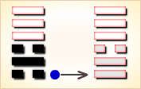
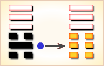
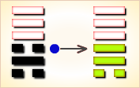

周易第6卦_讼卦(天水讼)_乾上坎下
如有疑问互相交流，微信：470283584
周易第6卦详解
讼卦原文
讼。有孚，窒惕，中吉，终凶。利见大人，不利涉大川。
象曰：天与水违行，讼。君子以做事谋始。
白话文解释
讼卦：虽有利可图(获得俘虏)，但要警惕戒惧。其事中间吉利，后来凶险。占筮得此爻，有利于会见贵族王公，不利于涉水渡河。
《象辞》说：上卦为乾，乾为天；下卦为坎，坎为水，天水隔绝，流向相背，事理乖舛，这是讼卦的卦象。君子观此卦象，以杜绝争讼为意，从而在谋事之初必须慎之又慎。
《断易天机》解
讼卦乾上坎下，为离宫游魂卦。上乾为刚，下坎为险，一方刚强，一方阴险，必然产生争论，因此多有不吉。
北宋易学家邵雍解
天高水深，达远不亲；慎谋退守，敬畏无凶。
得此卦者，身心不安，事多不顺，与他人多争诉之事，宜修身养性，谨慎处事。
台湾国学大儒傅佩荣解
时运：功名受阻，不宜树敌。
财运：开始谨慎，终可获利。
家宅：君子必求淑女。
身体：预防胜于治疗。
传统解卦
这个卦是异卦（下坎上乾）相叠。同需卦相反，互为“综卦”。乾为刚健，坎为险陷。刚与险，健与险，彼此反对，定生争讼。争讼非善事，务必慎重戒惧。
大象：乾天升于上，坎水降于下，相背而行而起讼。
运势：事与愿违，凡事不顺，小人加害，宜防陷阱。
事业：起初顺利，有利可图，继而受挫，务必警惕，慎之又慎，不得固执已见，极力避免介入诉讼纠纷的争执之中。与其这样，不如退而让人，求得化解，安于正理，可免除意外之灾。陷入争讼，即使获胜，最后还得失去，得不偿失。
经商：和气生财，吃亏是福，切勿追求不义之财。商业谈判应坚持公正、公平、互利的原则，尽量避免发生冲突。这样便会有好结果。
求名：不利。自己尚缺乏竞争实力，应坚守纯正，隐忍自励，自强自勉，切莫逞强。依靠有地位的人的帮助，及早渡过难关。
婚恋：虽不尽人意，倒也般配，彼此理解，未尝不可。双方应以温和的方式处理生活。
决策：争强好胜，不安于现状，为改变命运和超越他人而奋斗。头脑聪颖，反应敏捷，有贵人相助。但缺乏持之以恒的毅力，容易露出锋芒，得罪他人，带来诉讼之灾。宜承认现实，顺其自然，知足，适可而止。接受教训，引以为戒，可功成名就。
台湾张铭仁解卦
讼：表示诉讼、争端之象。主大凶象。事情冲突到必须见官上法院，可能必须以法律途径来解决了！凡事皆不利，而且已引起很大口舌是非争持，而必须摊牌互相攻击的程度了！
解释：官司缠讼。
特性：不服输，好竞争辩论，反应快，口才佳，易得罪他人，是自立自强之人。
运势：百事闭塞不通，伤害频繁，受中伤而又易陷于奸计，不如意之运也。得饶人处且饶人，得过且过，莫再争讼，否则皆不利也。
家运：家庭内部不和，有口舌争端之害，并有散离之象。
疾病：病情严重，为腰、血液、泌尿系统、头部疾患。
胎孕：生产无惊阻，安也。
子女：父子之间存有歧见，无法沟通之象。子女生来劳碌，与父母缘薄，多辛劳忧苦也。
周转：不得要领，难成。
买卖：因处理不当，有冲突争端，常招损失，不利也。
等人：不会来。就算会来，双方必有争执事情发生。
寻人：此人因争执事由负气出走，并有生命危险，又寻找不易，尽量往西北与北方寻找。
失物：不会出现。
外出：途中多有变故，宜改日出行。
考试：不理想。
诉讼：两败俱伤，宜找中间人调解，久争无益。
求事：难成。
改行：不利。
开业：不宜。
周易第6卦初六爻详解
初六爻辞
初六。不永所事，小有言，终吉。
象曰：不永所事，讼不可长也；虽小有言，其辩明也。
白话文解释
初六：做事不能持之以恒，稍有过错，最后还是吉利的。
《象辞》说：做事不能持之以恒，说明官司不可能长久打下去。虽然稍有过错，但争讼双方的是非曲直终将辨别清楚。
北宋易学家邵雍解
吉：得此爻者，会生起是非，但终吉。有病者，不药而愈。做官的会遭诽谤，但会不辩自明。
台湾国学大儒傅佩荣解
时运：不会久困，终可出名。
财运：及时售出，口舌无碍。
家宅：有些争议，分辨明白即可。
身体：初病可愈，久病则凶。
初六变卦

初六爻动变得周易第10卦：天泽履。这个卦是异卦（下兑上乾）相叠，乾为天，兑为泽，以天喻君，以泽喻民，原文：“履（踩）虎尾，不咥（咬）人”。因此，结果吉利。君上民下，各得其位。兑柔遇乾刚，所履危。履意为实践，卦义是脚踏实地的向前进取的意思。
周易第6卦九二爻详解
九二爻辞
九二。不克讼，归而逋，其邑人三百户无眚。
象曰：不克讼，归而逋也；自下讼上，患至掇也。
白话文解释
九二：讼事失败，归到采邑，三百户奴隶逃亡。没有大的灾祸。
《象辞》说：讼事失败，逃窜回家，这是躲避反讼。小官与大官争讼，败讼而归，势在必然。幸好灾难没有进一步扩大。
北宋易学家邵雍解
平：得此爻者，平安无事。做官的会有食邑之荣。
台湾国学大儒傅佩荣解
时运：退而隐居，可保无害。
财运：小有耗损，不必多虑。
家宅：不宜婚嫁。
身体：在外染病，回家调养。
九二变卦

九二爻动变得周易第12卦：天地否。这个卦是异卦（下坤上乾）相叠，其结构同泰卦相反，系阳气上升，阴气下降，天地不交，万物不通。它们彼此为“综卦”，表明泰极而否，否极泰来，互为因果。
周易第6卦六三爻详解
六三爻辞
六三。食旧德，贞厉，终吉。或从王事，无成。
象曰：食旧德，从上吉也。
白话文解释
六三：依赖先人遗业过活。卜问得险兆，但最后是吉利的。但是，如果服务于王事，谋取利禄，却不会成功。
《象辞》说：依赖先人遗业过活，因为六三爻象表明，居于九四之下，只有凭借祖上余荫才获吉利。
北宋易学家邵雍解
平：得此爻者，宜保持常态，则无灾难。做官的宜谨守常职，晋升无望。
台湾国学大儒傅佩荣解
时运：谨守旧业，求仕无成。
财运：固守家产，终可得利。
家宅：不宜另建新居。
身体：按原医师指示为宜。
六三变卦

六三爻动变得周易第44卦：天风姤。这个卦是异卦（下巽上乾）相叠。乾为天，巽为风。天下有风，吹遍大地，阴阳交合，万物茂盛。姤（gǒu）卦与夬卦相反，互为“综卦”。姤即媾，阴阳相遇。但五阳一阴，不能长久相处。
周易第6卦九四爻详解
九四爻辞
九四。不克讼，复即命，渝安贞，吉。
象曰：复即命，渝安贞，吉，不失也。
白话文解释
九四：讼事失败，败讼回家，服从判决。卜问平安，得吉利之兆。
《象辞》说：败讼回家，服从判决，安守本分，不失正道。
北宋易学家邵雍解
吉：得此爻者，会转危为安。做官的会闲中复职。
台湾国学大儒傅佩荣解
时运：转危为安。
财运：合作不成，反是好事。
家宅：改婚不失其道。
身体：有凶险，改变生活方式则吉。
九四变卦
九四爻动变得周易第59卦：风水涣。这个卦是异卦（下坎上巽）相叠。风在水上行，推波助澜，四方流溢。涣，水流流散之意。象征组织和人心涣散，必须用积极的手段和方法克服，战胜弊端，挽救涣散，转危为安。
周易第6卦九五爻详解
九五爻辞
九五。讼，元吉。
象曰：讼，元吉，以中正也。
白话文解释
九五：争讼，筮遇此爻，大吉大利。
《象辞》说：争讼而大吉大利，因为九五之爻居上卦的中位，像人守中正之道。
北宋易学家邵雍解
吉：得此爻者，经营、谋事、求财皆大吉。做官的会受到重用。读书人会获得佳绩。
台湾国学大儒傅佩荣解
时运：以正求进，必可大显。
财运：公平经营，取得正财。
家宅：与富贵人结婚。
身体：吐纳之术保健康。
九五变卦
九五爻动变得周易第64卦：火水未济。这个卦是异卦（下坎上离）相叠。离为火，坎为水。火上水下，火势压倒水势，救火大功未成，故称未济。《周易》以乾坤二卦为始，以既济、未济二卦为终，充分反映了变化发展的思想。
周易第6卦上九爻详解
上九爻辞
上九。或锡之鞶带，终朝三褫之。
象曰：以讼受服，亦不足敬也。
白话文解释
上九：王侯赐予人以绅带，但不满一天，三次赐予三次革夺。
《象辞》说：某人因为讼事而得到赐予绅带的殊荣，这不是值得尊敬的事。
北宋易学家邵雍解
平：得此爻者，会有争诉之忧，宜修德养身，化大为小。做官的会有成有败，患得患失。读书人认真学习，必可获佳绩。
台湾国学大儒傅佩荣解
时运：患得患失，殊为不值。
财运：不是正财，得不偿失。
家宅：不易安居。
身体：病势时好时坏，恐凶。
上九变卦
上九爻动变得周易第47卦：泽水困。这个卦是异卦（下坎上兑）相叠。兑为阴为泽喻悦；坎为阳为水喻险。泽水困，陷入困境，才智难以施展，仍坚守正道，自得其乐，必可成事，摆脱困境。